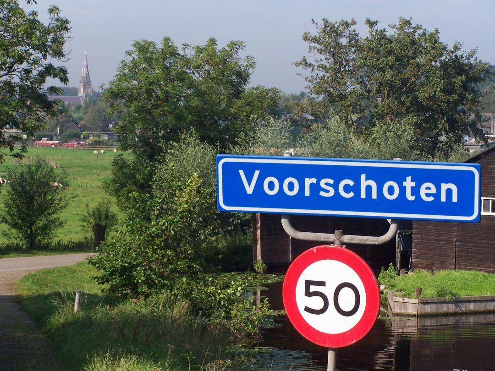
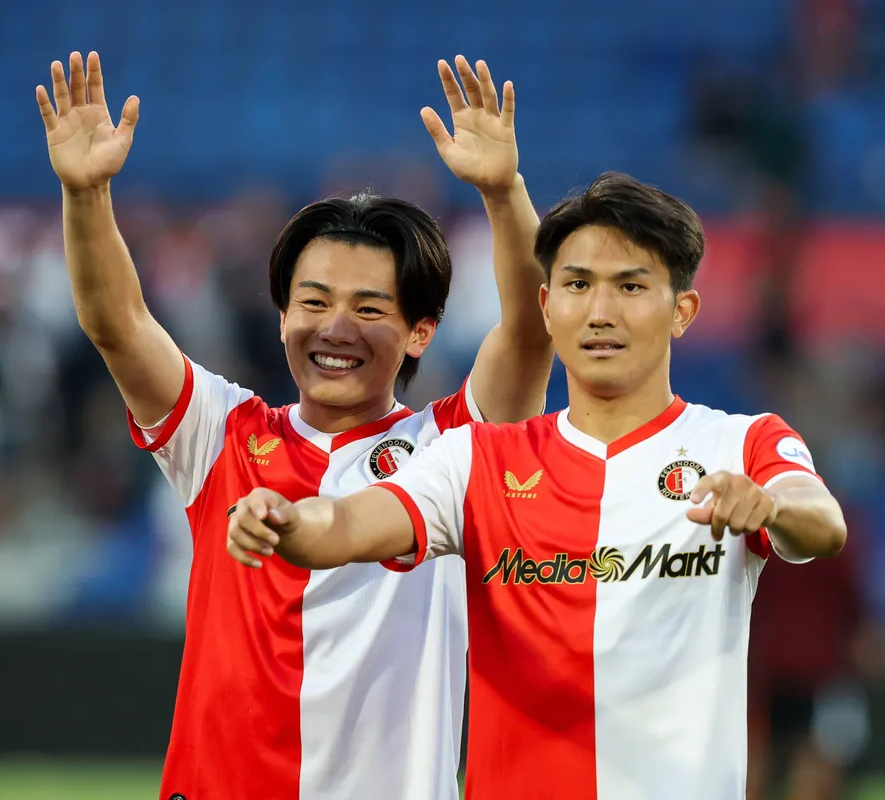
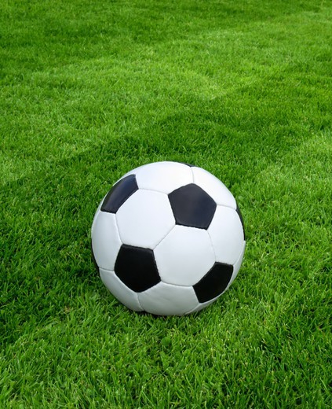

Homepage (over mij)
.
Mijn naam is Dani van Veen, ik ben geboren op 13 april 2009 in het Alrijne ziekenhuis in Leiderdorp, dus ik ben nu 16 jaar oud.
Ik woon al mijn hele leven in Voorschoten, en ik heb een broer van 18, een zusje van 1 en een hond als huisdier.


Mijn grootste hobby is voetballen, daarom doe ik dat vier keer in de week bij Voorschoten97 in de jo17-1, en ik voetbal al sinds mijn vierde.
Daarnaast is mijn favoriete voetbalclub Feyenoord. Waar ook mijn favoriete spelers spelen: Tsuyoshie Watanabe en Ayase Ueda.


Klik hier voor een Feyenoord ervaring!